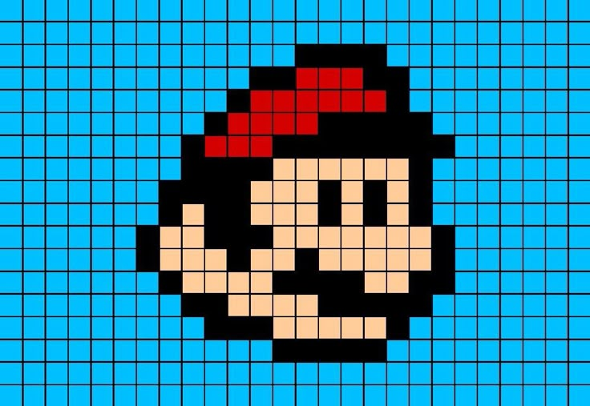
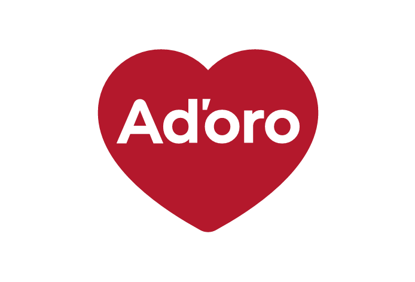
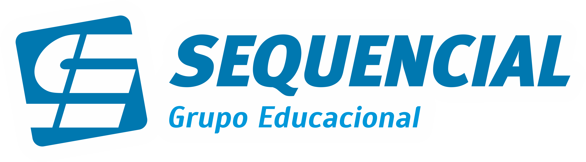
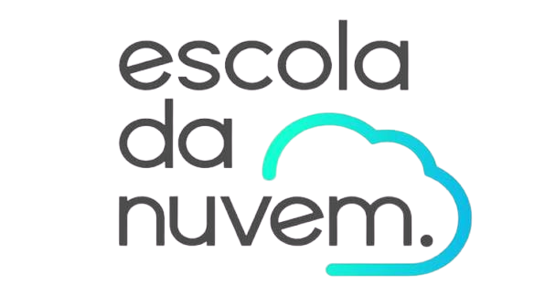

Segurança da Informação · GRC · LGPDAtuo com GRC, LGPD, governança e apoio à gestão de riscos, dando suporte ao mapeamento de sistemas, fornecedores, ativos e processos corporativos. Estudante de ADS, com interesse em construir carreira em Cybersecurity, IAM e Cloud.
Sou estudante de Análise e Desenvolvimento de Sistemas e atuo como estagiário em Segurança da Informação, com foco em GRC, LGPD, governança, conformidade e apoio à gestão de riscos. No estágio, trabalho no mapeamento de sistemas, fornecedores, ativos, usuários e processos corporativos, além de apoiar demandas de privacidade e proteção de dados.
Também tenho experiência anterior como Aprendiz, o que fortaleceu minha responsabilidade, organização e adaptação ao ambiente corporativo. Meu objetivo é evoluir na área de Segurança da Informação, Cybersecurity, GRC, LGPD, IAM, Cloud e Infraestrutura — unindo a parte técnica à visão de governança e negócio.
Idiomas Português (nativo) · Inglês (nível profissional de trabalho)
| Rev. | Período | Descrição | Empresa |
|---|---|---|---|
| A | Dez 2024 — Abr 2026 | Aprendiz na área de Meio Ambiente — apoio em rotinas administrativas, organização de informações e controles internos, com acompanhamento de demandas do setor. |  AD'ORO S/A |
| B | Dez 2024 — Abr 2026 | Programa de aprendizagem profissional com atividades teóricas semanais: informática, comunicação, noções administrativas, contabilidade e postura profissional. | Guardinha de Várzea Paulista / AEHDA |
| C | Mai 2026 — atual | Estagiário em Segurança da Informação | GRC e LGPD. Apoio no inventário de sistemas, fornecedores e ativos; organização e análise de informações; demandas de LGPD e proteção de dados; rotinas de GRC e controles internos com uso de Excel. | AD'ORO S/A |

Jan 2023 — Dez 2024
Tecnologia da Informação
Fev 2025 — Mar 2027
Tecnologia da Informação

Jul 2026 — Dez 2026
Tecnologia da Informação
É o repositorio onde está hospedado esse site que você está visitando agora, ele foi recentemente atualizado, pois a ultima versão foi em 2024, a V.0.1, fiquem a vontade, espero que gostem!
Aqui foi o meu primeiro contato com instegrações via API, foi um enorme prazer concluir esse projeto e poder trazer como uma conquista de aprendizado.
Nenhum projeto encontrado para esse filtro.